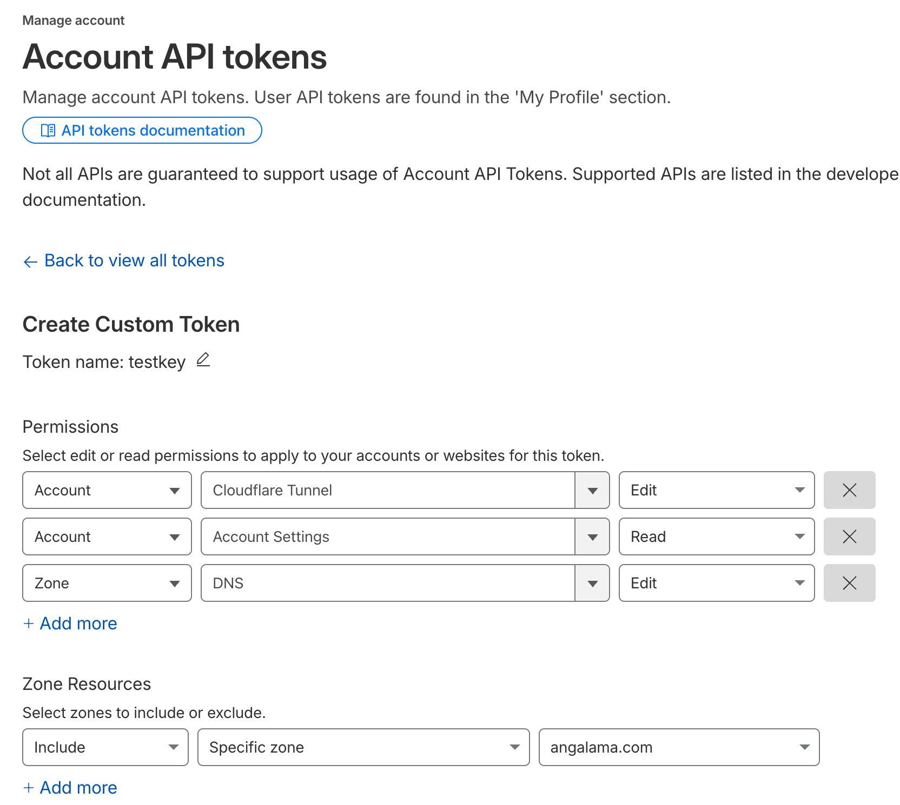

from cfeasy import *cfeasy
Manage Cloudflare DNS records and tunnels from Python.
cfeasy is for people who host their own services on a server and use Cloudflare for the domain. It does two jobs. It writes DNS records, the entries that say where a name like app.example.com points. And it sets up Cloudflare Tunnels, which let visitors reach a service on your server without opening any ports on it.
Cloudflare publishes an official Python SDK that can do all of this, but each job takes several calls and you have to look up zone and account IDs yourself. cfeasy wraps the SDK in one class, CF, whose methods take domain and tunnel names and find the IDs for you. The examples on this page ran against a real Cloudflare account; they are marked so that the docs build does not run them again.
Install
pip install cfeasyCreate an API token
cfeasy talks to Cloudflare with an API token. It needs a custom token, which you create with only the permissions you choose. The older Global API Key, which can do anything on the account, does not work with it.
Open dash.cloudflare.com/profile/api-tokens, choose Create Token, then Custom Token, and add these three permissions:
| What it is for | Resource | Permission |
|---|---|---|
| Reading and writing DNS records | Zone -> DNS | Edit (limit it to your zone) |
| Finding your account ID | Account -> Account Settings | Read |
| Creating and deleting tunnels | Account -> Cloudflare Tunnel | Edit |

Connect and check the token
CF takes the token as its first argument. If you leave it out, the SDK reads it from the CLOUDFLARE_API_TOKEN environment variable, which keeps the token out of your code.
Set CLOUDFLARE_API_TOKEN before you call CF(). To pass the token directly, use CF('your-token'). Before changing anything, call verify. It only reads: it looks up your account, lists your zones (a zone is a domain you manage on Cloudflare) and lists your tunnels. It also checks that the token is active. It returns ok, the token status, the account ID, the zone names and the tunnel count. If a check fails, usually because the token is expired or lacks one of the permissions above, ok is False and errors holds Cloudflare’s message for each failed check. Pass domain to check one zone instead of listing them all.
c = CF()
c.verify() # -> {'ok': True, 'token': 'active', ...}{'ok': True,
'token': 'active',
'account': '…',
'zones': ['angalama.com'],
'tunnels': 1,
'errors': {}}DNS records
A DNS record tells the internet where a name such as app.angalama.com points. An A record holds an IPv4 address, and a CNAME record holds another name to look up instead.
upsert_record is the method to use for writing a record, because running it a second time leaves you with the same result instead of a duplicate. You give it the domain, the name, and the content. The name @ means the domain itself. A name that equals the domain, or ends with a dot and the domain, is used as written. Any other name, such as app or api.internal, is a subdomain of the domain. The record type defaults to A.
The method looks at the records of the requested type under that name. Records of other types stay untouched. If none exists, it creates the record. Otherwise it keeps one record: the first with the requested content, else the first of that type. It updates the kept record in place when its content or proxied setting differs. It deletes the other records of that type under the name. The example below points app.angalama.com at the address 1.2.3.4 and returns the record as Cloudflare stored it:
dom, nm = 'angalama.com', 'app'
c.upsert_record(dom, nm, "1.2.3.4"){'name': 'app.angalama.com',
'type': 'A',
'comment': None,
'content': '1.2.3.4',
'proxied': False,
'settings': {'ipv4_only': None, 'ipv6_only': None},
'tags': [],
'ttl': 1,
'id': '3819309b81252192134793a601f43737',
'created_on': datetime.datetime(2026, 3, 22, 20, 3, 29, 872980, tzinfo=TzInfo(0)),
'meta': {},
'modified_on': datetime.datetime(2026, 3, 22, 20, 3, 29, 872980, tzinfo=TzInfo(0)),
'proxiable': True,
'comment_modified_on': None,
'tags_modified_on': None}Tunnels
A Cloudflare Tunnel solves the problem of exposing a service on a server that you would rather not open to the internet. A small program called cloudflared runs next to your service and makes an outgoing connection to Cloudflare. When someone visits app.example.com, Cloudflare sends the request down that connection, and cloudflared passes it to your service. The server needs no open ports and no public IP address.
Three things have to exist for this to work:
- A tunnel, registered with your Cloudflare account under a name you choose.
- A CNAME record that points your subdomain at
<tunnel-id>.cfargotunnel.com, the address Cloudflare gives every tunnel. - A tunnel token, a secret string you give to
cloudflaredso that it connects to the right tunnel.
The cell below makes each one by hand. tunnels lists the account’s tunnels, so the code reuses a tunnel called my-app if there is one and calls create_tunnel if not. tunnel_cname writes the CNAME record through upsert_record, with Cloudflare’s proxy turned on, which a tunnel needs. tunnel_token fetches the token.
tname = 'my-app'
exists = L.filter(lambda x: x.get('name') == tname)
tid = first(t)['id'] if (t:=exists(c.tunnels())) else c.create_tunnel(tname)['id']
c.tunnel_cname(dom, nm, tid)
token = c.tunnel_token(tid)Set up a tunnel in one call
setup_tunnel does the three steps above for you, and it is the method to reach for unless you need to control each step. It returns the tunnel ID and the token. Pass the token to cloudflared, for example as the CF_TUNNEL_TOKEN environment variable that the cloudflared_svc service in the dockeasy package reads.
Give it a domain and a subdomain name to serve app.example.com, as in the first example. Leave the name out to serve the domain itself, as in the second. A CNAME record at the root of a domain is normally not allowed, but Cloudflare accepts it and resolves it to addresses on its side, which it calls CNAME flattening.
The tunnel is named after the subdomain, or after the domain when there is no subdomain; pass tunnel_name to choose another name. If a tunnel with that name already exists it is reused, so calling setup_tunnel again does not make a second one.
tid, token = c.setup_tunnel(dom, nm)
tid, tokentid_apex, token_apex = c.setup_tunnel(dom)
tid_apex, token_apextunnel_id finds a tunnel’s ID from its name, which helps when you set a tunnel up earlier and kept only the name. setup_tunnel names a tunnel after its subdomain, or after the domain for an apex tunnel, so those are the names to look up. delete_tunnel removes a tunnel by ID; together the two clean up both tunnels made above. Deleting a tunnel leaves its CNAME record in place, so remove that with delete_record if you no longer need it.
c.tunnel_id(nm) # -> UUID of the `app` tunnel
c.tunnel_id(dom) # -> UUID of the apex tunnelc.delete_tunnel(c.tunnel_id(nm))
c.delete_tunnel(c.tunnel_id(dom))Cache rules and purges
ruleset_upsert writes cache rules or custom firewall rules into a zone. It replaces your rules by their ref, keeps everyone else’s whole, and returns False when the zone already has them. A deploy can run it every time. purge empties the cache by URL, by URL prefix or entirely. It retries rate limits, connection errors, HTTP 408, HTTP 409 and HTTP 5xx responses. It waits before each retry, and each wait is twice the previous wait. By default, purge raises a refusal caused by a plan or permission restriction. Set fallback_all=True to request a full purge after the refusal instead, and purge reports that in its return value. Any other error raises. Both need a token with the matching zone permissions: Cache Rules -> Edit, Zone WAF -> Edit for firewall rules, and Cache Purge -> Purge.
zid = c.zone_id(dom)
rule = dict(ref='static', expression='starts_with(http.request.uri.path, "/static/")', action='set_cache_settings',
action_parameters=dict(cache=True), enabled=True)
c.ruleset_upsert(zid, [rule]) # True the first time, False after
c.purge(zid, prefixes=[f'{dom}/static/']) # [{'prefixes': [...]}], raises if refused
c.purge(zid, prefixes=[f'{dom}/static/'], fallback_all=True) # [{'purge_everything': True}] if refused